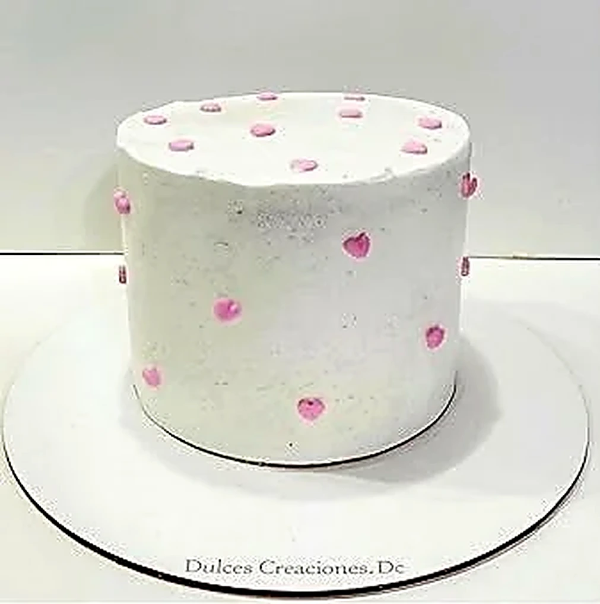
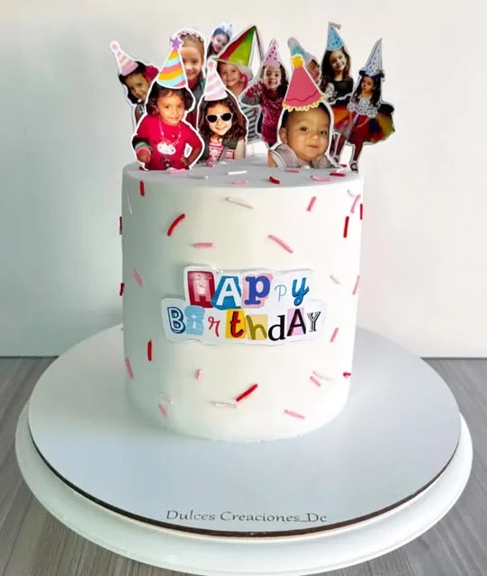
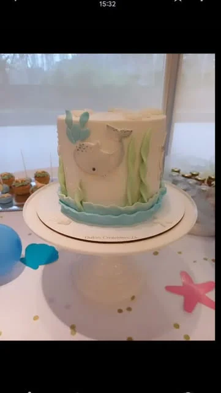
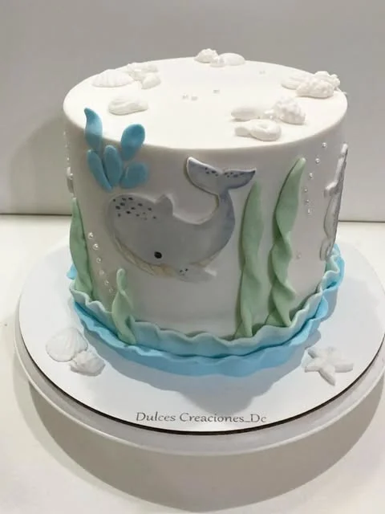
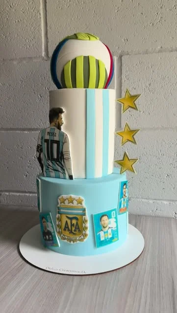
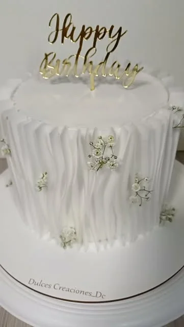

Tortas Infantiles
Personajes Disney, princesas, superhéroes y temáticas animadas con detalles modelados y toppers personalizados.
Ver infantiles →Elaboramos cada torta a mano en nuestro taller de Temperley, combinando bizcochuelos caseros bien húmedos, rellenos con dulce de leche repostero premium y diseños cuidados para cumpleaños, 15 años y mesas dulces.

Pensados a la medida de tu festejo
Desde personajes animados para los más chicos hasta estructuras elegantes para eventos y mesas dulces completas.
Personajes Disney, princesas, superhéroes y temáticas animadas con detalles modelados y toppers personalizados.
Ver infantiles →
Drip cakes, tortas de dos o tres pisos, detalles florales y acabados elegantes para momentos inolvidables.
Ver 15 años →
Cupcakes temáticos, cake pops, galletitas decoradas y mini bocados para armar una mesa dulce completa.
Ver mesas dulces →
Camisetas y escudos de clubes de fútbol (San Lorenzo, Boca, River), además de temáticas de Fortnite y Minecraft.
Ver temáticas →Hacé clic en cualquier foto para verla en tamaño completo o pedir presupuesto por ese mismo modelo por WhatsApp.






Coordinamos todo por WhatsApp de forma simple y personalizada.
Nos contás la temática elegida, fecha del evento, cantidad de invitados o nos compartís fotos de referencia que te gusten.
Definimos la combinación de bizcochuelo y rellenos. Te pasamos el presupuesto exacto y guardamos la fecha con una seña del 50%.
Tu torta estará lista y en caja reforzada en el horario acordado para que viaje segura a tu mesa dulce.
Materia prima de primera línea, bizcochuelos caseros esponjosos y rellenos generosos.

“Cada festejo es irrepetible. Me gusta pensar cada torta como una pieza única que no solo luzca bien en las fotos, sino que sorprenda por su sabor al cortarla.”
Soy Elizabeth, creadora de Dulces Creaciones. Trabajo desde mi taller en Temperley con recetas probadas, horneado fresco y dedicación 1 a 1 en cada pedido, cuidando la estructura, el diseño y la calidad de los ingredientes.
Nuestro punto de retiro se encuentra en Temperley, Zona Sur de Buenos Aires. Coordinamos con cada cliente el día y la franja horaria de entrega.
Información clara antes de encargar tu pedido.
Recomendamos encargar con 7 a 15 días de anticipación. Si tu evento es en una fecha más cercana, consultanos por WhatsApp por si tenemos disponibilidad en la agenda.
Los pedidos se retiran personalmente por nuestro taller en Temperley, Zona Sur GBA. La torta se entrega sobre base rígida y en caja reforzada para su traslado seguro.
Generalmente se calculan unos 100 a 120 gramos por persona cuando hay mesa dulce o comida variada, y unos 150 gramos si la torta es el postre principal. Escribinos con la cantidad de invitados y te sugerimos el tamaño adecuado.
Aceptamos Mercado Pago, transferencia bancaria y efectivo. Se abona una seña del 50% para reservar la fecha y el saldo restante al momento de retirar.
Se conserva en heladera de 5 a 7 días. Te recomendamos sacarla de la heladera unos 20 minutos antes de cortarla para que los rellenos y el bizcochuelo tomen la mejor textura.
Escribinos por WhatsApp con tu fecha y temática, y te respondemos en el día con presupuesto y asesoramiento sin cargo.
Consultar por WhatsAppPublicamos fotos de pedidos y novedades todas las semanas en @dulcescreaciones_dc.


